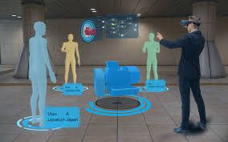

Un proyecto web por Mauricio Sierra y Edgar Valerio
Un gemelo digital es una réplica virtual de algún producto donde este recibe datos en tiempo real y mediante una inteligencia artificial, cloud computing y machine learning se puede saber cómo piensa y actúa. La función de un gemelo digital es el poder imitar a un objeto para después imitar su comportamiento, esto con el objetivo de saber como se esta desenvolviendo su contraparte física y poder registrar sus datos de manera remota. Otra cosa para lo que se emplea es para la creación y prueba de prototipos, donde se hace una simulación de como se cree que debería funcionar este nuevo invento.
Los gemelos digitales pueden replicar varios elementos del mundo real, desde piezas individuales de un equipo en una fábrica hasta instalaciones completas, como turbinas eólicas e incluso ciudades enteras. La tecnología de gemelos digitales permite supervisar el rendimiento de un activo, identificar posibles fallos y tomar decisiones mejor fundamentadas en cuanto al mantenimiento y el ciclo de vida.
según una encuesta realizada en 2018 por McKinsey & Company[1] a empresas acerca de la adopción de Inteligencia Artificial, un 47% de los 2.135 participantes mencionan haberla incorporado en algún proceso de negocio, lo que supone un incremento significativo con respecto a un estudio similar realizado en 2017 donde sólo un 20% de participantes reportan usar este tipo de tecnología. La mayoría de participantes (58%) señalan que menos del 10% de la inversión digital está destinada al desarrollo de productos que incorporan IA, pero muchos de los encuestados (78%) tienen mucha confianza de que habrá un incremento en la inversión en IA en los próximos años. Así por ejemplo, un informe publicado por PWC[2] estima que en 2030 la contribución de la Inteligencia Artificial al mercado global será de unos 13.8 billones de euros.
Igual que Bluetooth o el wifi de alta velocidad, esta tecnología se enfoca a lo invisible, no intrusivo y ubicuo. En manufactura avanzada veremos mayor integración de sensores a sistemas que apoyarán los esfuerzos de datos agregados para construir los gemelos.
El Centro de Excelencia ASTM, en su guía estratégica de madurez de adopción de tecnología de manufactura aditiva, reporta los aspectos más maduros de esta tecnología
Los Gemelos Digitales se presentan como una tecnología disruptiva en la simulación y análisis de procesos industriales, capaz de exprimir al máximo los beneficios de la transformación digital de planta, una transformación en el ya se encuentran involucradas muchas empresas y que se intensificará en los próximos años.